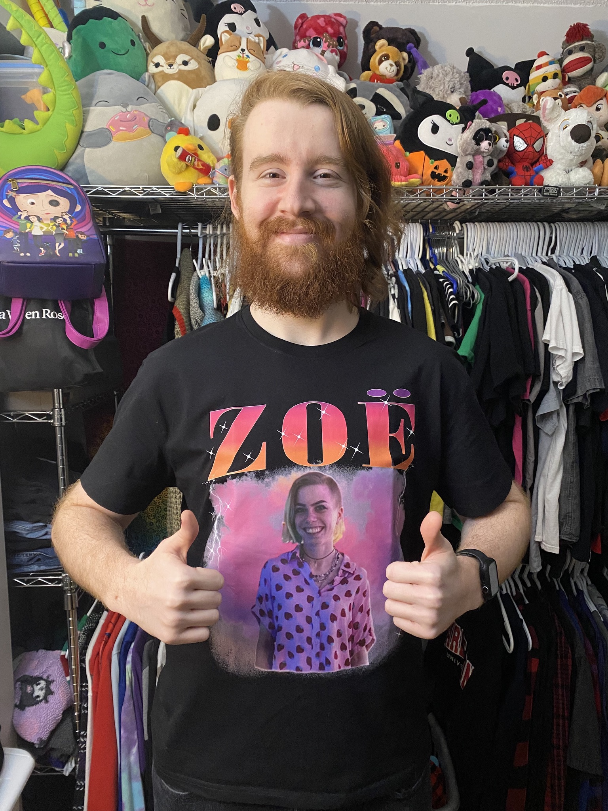

Hi There!
Hello! I'm Dylan, a 23-year-old student at Carleton University. I have a passion for graphic design, coding, and web design. Before starting university, I worked as a manager in both food service and retail. My journey with websites began when I was just 4 years old, when my dad, a small business owner with no coding experience, created a webpage for me based on my ideas. While he was learning to code a website for his own company, it ignited my fascination with coding. I hope you enjoy my website!
Timeline
I created a timeline instead of writing an essay about my life story. This page outlines the key years in my life. Click on the segments of the timeline for more information!